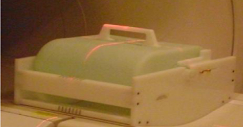
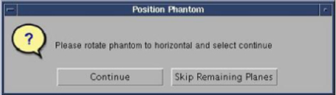
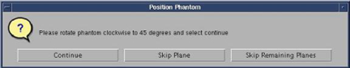
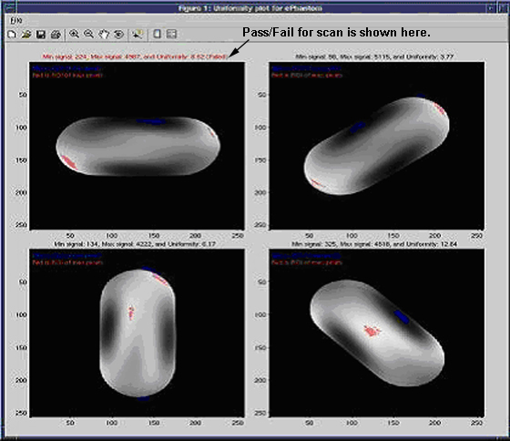

Operating Documentation
Direction 5500113, Rev# 3
Discovery MR750 3.0T Service Methods
Module Version 4.0, Version Date 11/10/09
Operating Documentation |
| Required Persons | Preliminary Reqs | Procedure | Finalization |
|---|---|---|---|
| 1 | Not Applicable | Not Applicable | Not Applicable |
| Item | Qty | Effectivity | Part# | Manufacturer | |
|---|---|---|---|---|---|
| Elliptical Phantom and Test Fixture | 1 | - | 5313739 | - | |
At the scanner, remove any surface or head coil from the bore. Place the Elliptical Phantom and Test Fixture (PN 5313739) at the center (S/I) of the cradle. Set the angle of the phantom to 0 degrees (refer to Illustration 1).
Illustration 1: Phantom at Center of the Cradle

| NOTE: | Allow the phantom solution to settle for 5 minutes prior to scanning. This will prevent flow-related artifacts, which may affect the test results. |
Landmark on the center of the phantom (refer to Illustration 2). Press [LANDMARK] at the keypad on the front of the magnet enclosure, then press [ADV TO SCAN].
Illustration 2: Elliptical Phantom Positioning

| NOTE: | It is very important to run localizer Body scan prior to running automatic Uniformity tool. |
At the Operators Console, click on New Pt and prescribe the following scan:
| ID: | geservice |
| Name: | Localizer |
| Weight (Lb): | 150 |
| Patient Position: | Supine |
| Patient Entry: | Head First |
| Coil: | Body |
| Plane: | 3-Plane |
| Mode: | 2D |
| Pulse Seq: | Gradient Echo |
| Grad Mode: | Whole |
| Imaging Options: | Seq, Fast |
| FOV: | 40 cm |
| Slice Thickness: | 3.0 mm |
| Spacing: | 0 |
| Scanning Range: | S/I = 0 R/L = 0 A/P = 0 |
| # of Slices: | 1 |
| Freq Matrix: | 256 |
| Phase Matrix: | 128 |
| NEX: | 2.0 |
| Phase FOV: | 1.0 |
| Freq Dir: | Unswap |
| Autoshim: | Auto |
Select [Save Series], then [Download]. Select the [Scan] option and allow scan to complete.
Install service key.
In a command window, type the following:
cd /usr/g/service/mclass/uniformity
touch .uniformity_enable
run_uniformity_tool
The Uniformity Tool GUI (refer to Illustration 3) pops up.
| NOTE: | The scan status and result are displayed on Uniformity Tool GUI Status dialog box (see Illustration 3). All buttons are inhibited during scan. Only [Abort Scan] button is available during scan. All buttons are available when scan is idle. [Abort Scan] button is inhibited when scan is idle. DO NOT Re-LANDMARK between scans. |
Illustration 3: Uniformity GUI and Status

Choose [Four scans] mode.
Select [Scan and Analysis].
Choose Yes when asked if user has landmarked (refer to Illustration 4).
Illustration 4: Landmark

Choose Continue when asked to position the phantom at horizontal position as shown in Illustration 5.
Illustration 5: Horizontal Position

During scan, record the RF amplifier Peak Forward Power value from the LCD display on the front of the RF amplifier in Table 1. Refer to Illustration 6 for the location of this value.
Illustration 6: RF Amplifier LCD Display

After first scan completes, confirm that a dialog appears requesting the user to re-position the phantom.
Illustration 7: View from Table End

When asked to position the phantom, rotate phantom CCW to 45-degree plane and choose Continue as shown in Illustration 8.
| NOTE: | Illustration 8 says clockwise, but should be counter-clockwise |
Illustration 8: 45 Degree Position

During the scan, record the RF amplifier Peak Forward Power value.
After the second scan completes, confirm that a dialog appears requesting the user to re-position the phantom.
When asked to position the phantom, rotate phantom CCW to 90-degree plane and choose Continue as shown in Illustration 9.
| NOTE: | Illustration 9 says clockwise, but should be counter-clockwise |
Illustration 9: 90 Degree Position

During the scan, record the RF amplifier Peak Forward Power value.
After the third scan completes confirm that a dialog appears requesting the user to re-position the phantom.
When asked to position the phantom, rotate phantom CCW to 135-degree plane and choose Continue as shown in Illustration 10.
| NOTE: | Illustration 10 says clockwise, but should be counter-clockwise |
Illustration 10: 135 Degree Position

During the scan, record the RF amplifier Peak Forward Power value. Scanner should stop after scanning 135-degree position and automatically process results as shown in Illustration 11.
Illustration 11: Result Plot

Record TG, Min Signal, Max Signal, and Uniformity values displayed on the GUI Status box in Table 1.
| NOTE: | TG Values can be obtained from the Uniformity Tool GUI (shown in Illustration 3). |
Table 1: Uniformity Phantom Data
| Elliptical Phantom Position | Exam/Series/Image | TG | Power | Uniformity | ||
| FW | Min | Max | U | |||
| 0 | ||||||
| 45 | ||||||
| 90 | ||||||
| 135 | ||||||
| NOTE: | The Forward Power values will vary somewhat during scan, but a general reading can be determined within a few seconds. Be consistent throughout this procedure in the method used to record this value. |
GUI indicates if the Uniformity test passed or failed. If failed, proceed to Section 4.5 of the 3.0T Twin RF Body Coil Replacement to align the coil.
No finalization steps.